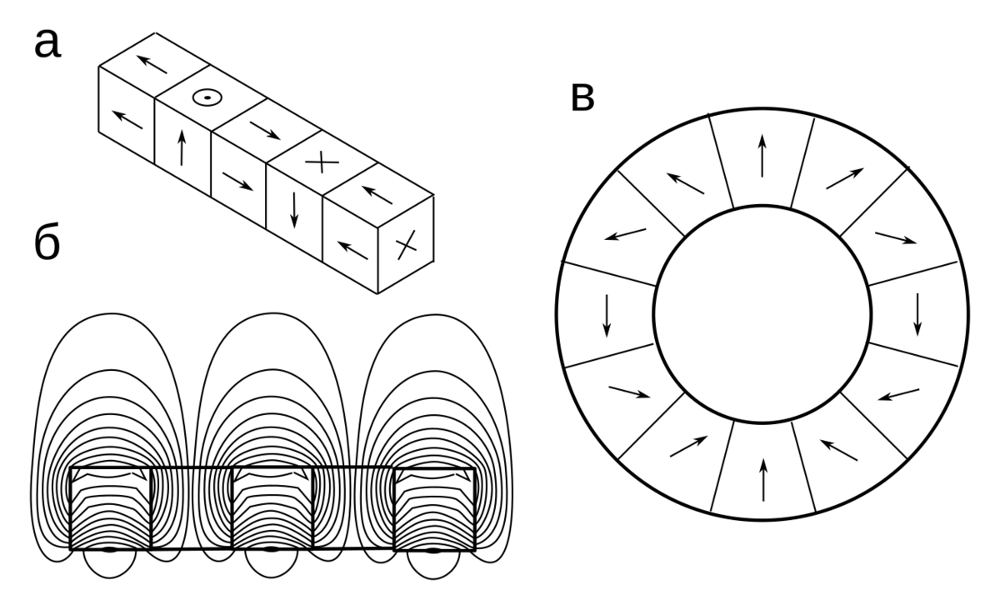

Метод Паккарда-Вариана
Метод относится к области ЯМР в слабых полях и, в частности, земном магнитном поле. Свойства спиновых систем таковы, что амплитуда ЯМР-сигнала прямо пропорциональна напряженности внешнего магнитного поля. С открытием ЯМР Началась борьба за приемлемое отношение сигнала к шуму. Именно поэтому развитие ЯМР-спектроскопии пошло по пути увеличения полей - стали создавать сложные сверхпроводящие постоянные магниты. Современная электроника достигла уровня, когда собственные шумы усилителей стали незначительными и для усиления сигналов с амплитудой в несколько микровольт до сотен милливольт достаточно одной небольшой микросхемы. Во времена электронных ламп подобные усилители были практически невозможны.
Тем не менее, на заре ЯМР интерес к слабым полям проявлялся. Дело в том, что электромагниты с достаточной однородностью магнитного поля были не всем доступны. А магнитное поле Земли очень однородно, особенно вдали от города и промышленных объектов. Также можно увеличить количество спинов в системе за счёт большего объема образца (несколько литров), благо хорошая однородность поля это позволяет. Кроме того, в слабых полях ожидались особенности ЯМР и было интересно их изучить.
Первые попытки получить ЯМР в земном поле были основаны на непрерывном методе. Для развёртки поля создавали большие кольца Гельмгольца, которые ориентировали вдоль магнитного поля Земли с целью создания "добавки" к земному полю и возможности её изменения. Приёмный контур настраивали на частоту чуть больше (или меньше, если добавка отрицательная) частоты ЯМР в земном поле и разворачивали поле от нуля до некоторой величины, которую позволяла конструкция колец. И несмотря на все ухищрения, отношение сигнала к шуму было достаточным только чтобы зарегистрировать резонанс, увидеть небольшое поглощение на фоне шумов. Ни о какой спектроскопии в слабых полях речи быть не могло. Разумеется, применение импульсного метода исключалось - сигнал ЯМР просто "тонул" в шуме. Не помогало даже длительное накопление сигнала, поскольку земное поле флуктуирует, и расфазирование сигналов приводило к "замыливанию" результата.
Схема метода Паккарда-Вариана
Простое и изящное решение придумали Мартин Паккард и Рассел Вариан, который в последствии создал известную американскую фирму по производству ЯМР спектрометров. Они сначала выдержали образец в сильном магнитном поле, в котором намагниченность выросла на несколько порядков, а потом поместили его в приёмный контур, где намагниченность релаксировала уже в земном поле с соответствующей для него частотой. Метод затем использовался в различных вариантах, но сам принцип стал основным для регистрации ЯМР в слабых полях. Упростились и получили своё развитие магнитометры для измерения магнитного поля Земли.

Линейная сборка Хальбаха (а), её магнитное поле (б), кольцевая сборка (в). Поле кольцевой сборки сосредоточено главным образом внутри.
Процесс дополнительного намагничивания образца перед экспериментом навали "предварительной поляризацией" или короче "предполяризацией". Способов её осуществления тоже несколько. Самый простой - сделать постоянный магнит из сильных неодимовых магнитов, составленных в кольцевой массив Хальбаха. Выдержав в таком магните образец несколько секунд, быстро переносят его в датчик прибора и подают возбуждающий импульс, затем наблюдают ЯМР-сигнал. Способ с отдельной поляризационной катушкой позволяет не терять время на перемещение образца, но в катушке не получить такое сильное поле, как у неодимовых магнитов, кроме того, необходимы большие токи для получения сильного магнитного поля. И третий способ является модификацией второго: ток поляризации подают прямо в катушку датчика, которая имеет достаточно много витков провода большого сечения. Такие параметры катушки необходимы для приемлемой добротности приёмного контура, почему бы их не использовать и для получения сильного магнитного поля? При этом усложняется схема прибора, необходимо разработать блок коммутации, который препятствует попадание больших токов индукции на вход чувствительного усилителя, но выигрыш в компактности прибора очевиден.
�